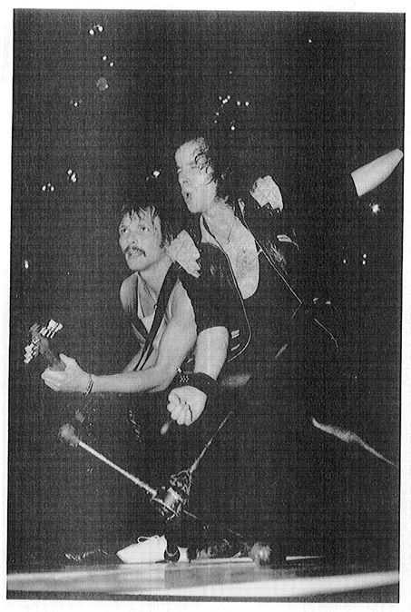

“Turn Up the Music”
—Sammy Hagar
The heavy metal genre erupted in the early 1970s from the wider cultural complex of rock music, which, in turn, had grown out of the rock and roll of the 1950s.1 Rock and roll and rock are far too broad to be considered genres themselves; they must be categorized as formations within the field of musical culture that include varieties of genres and less crystallized subforms.2 Neither rock and roll nor rock has a standard definition. Each is a bricolage that can only be defined or totalized from one of its aspects. Each aspect will have its own history or genealogy of its origins, which makes sense of what it is.
Heavy metal has produced texts that offer their own history of rock and roll. Perhaps the paradigmatic text in regard to rock and roll’s genealogy is AC/DC’s song “Let There Be Rock.”3 For AC/ DC, rock and roll was a genuine eruption, not a product of an insensible and continuous evolution of musical forms. Rock and roll was something uniquely new when it arose in 1955.
The progenitors of rock and roll were the musical sensibilities of two races, the whites and the blacks. The former provided the schmaltz and the latter provided the blues. “Schmaltz,” which literally means rendered chicken fat, is used figuratively to refer to the sentimental and overemotional styles of pop crooners, and more generally to the way in which those styles are promoted and projected. “The blues” is that complex musical genre that expressed the joys and sorrows of African-Americans in a secular key. Pop is a dream machine, whereas the blues seek to portray life without illusion. According to blues singer Muddy Waters, “The blues had a baby and they called it rock and roll.” What Waters does not mention—and AC/DC does—is that the father of this bastard child was schmaltz. In AC/DC’s vision the unassuming and straightforward blues are given a shot of emotional hype, resulting in a hybrid music with emergent qualities that are all its own.
According to AC/DC, no one knew what the progenitors of rock and roll had in store, but Tchaikovsky heard the news. Here AC/ DC acknowledges one of the founders of rock and roll, Chuck Berry, who in his 1955 song “Roll Over Beethoven” exhorts Beethoven to roll over in his grave and tell Tchaikovsky the good news that rock and roll has been born.4 In the AC/DC song, rock is born as a concert, which gives it a power of immediacy. The song presents a series of ordinations that there be sound, light, drums, and guitar. This order of birth presents rock and roll from the viewpoint of heavy metal. Sound comes first: volume, a key emergent characteristic of rock and roll, was not a defining feature of pop or the blues. Next comes the stage lights that illuminate the band, the gods of the music. Finally come their instruments, the drum and the guitar. For heavy metal, rock and roll means the appearance of a sensual and vitalizing power that only heavy metal brings to its highest pitch, its perfection.
Rock and roll was superseded in the 1960s by rock, which was also a hybrid formation. Rock remixed rock and roll’s constituents, adding a new, and this time around, less diluted shot of blues. New elements, especially folk music, were mixed into the blend. The rock of the late 1960s encompassed an incredibly diverse set of musical styles. Consider Woodstock. All the music performed at the Woodstock Music and Art Fair, held 15–17 August 1969, was considered “rock” by performers, audience, and promoters. Jimi Hendrix, Sha-Na-Na, the Who, the Jefferson Airplane, Janis Joplin, and Joe Cocker all belonged in the same fold. The audience appreciated it all as an undifferentiated musical style that was distinguished from other broad styles such as pop and folk music. A few years after Woodstock, however, young people would no longer use the term “rock” to name the type of music they favored. Asked for their preference, now they would refer to some genre or specific artist. The “rock” audience had lost its cohesion and fragmented into distinct followings for such forms as the art rock of Genesis and Yes, the southern rock of the Allman Brothers and Lynyrd Skynyrd, the singer-songwriter style of James Taylor, and heavy metal. The record industry encouraged the divisions as a marketing strategy, intensively exploiting the new, specialized audiences.5
The splintering of rock reflected the splintering of the youth culture. International in scope, the youth community of the 1960s had shared tastes in clothing, drugs, music, and social and political ideals. The culture had never been hegemonic, but for the media, for political and social authorities, and for many young people, even those who did not adopt its forms, the youth culture had symbolized the solidarity of youth. Although it grew out of the affluence that followed World War II, and although it was celebrated in the rock and roll of the 1950s, the youth culture’s full emergence as a coherent and powerful unit of society can be traced to the civil rights movement of the early 1960s, the free speech movement that began on college campuses around 1964, and especially the antiwar movement that began in earnest around 1966. The youth culture achieved its most unified form in the period 1966–68. The decline and fall of the youth culture took place during the years from 1968 to 1972. Among the events that occurred in this later period were the police actions against mainly youthful demonstrators in Chicago, Paris, and Mexico City—among other places; the failure of Senator Eugene McCarthy’s campaign for president; the assassinations of Martin Luther King, Jr., and Robert Kennedy; and the killings of students at Kent State and Jackson State universities. The Woodstock triumph of August 1969 was negated by the horror of Altamont in December of that same year. The breakup of the Beatles in 1970 marked the end of a group that had in many ways symbolized the youth culture. The final nail in the youth culture’s coffin was the end of the draft. This backhanded payoff to the antiwar movement satisfied its more selfish demands, but in the process undercut its sense of idealism. Heavy metal was born amidst the ashes of the failed youth revolution.
The eruption of the heavy metal genre, its formative phase, occurred during the years between 1969 and 1972. No one can name a specific date at which the genre became clearly distinguishable; its beginnings must be traced retrospectively from its phase of crystallization in the mid-1970s. At first what will later become the code of the genre appears in isolated songs. Then the work of a band or a cluster of bands begins to exemplify this code. Finally, the rules for generating the music played by such a cluster are selfconsciously acknowledged and become a code for others to emulate. At that point the genre has achieved full being.
Heavy metal has many histories. There is no consensus on its precursors, basic influences, first full-fledged songs and bands, or developmental stages. There is even some debate about its name. Halfin and Makowski, in their book Heavy Metal: The Power Age, bemoan this lack of unity: “One of the many problems with Heavy Metal is that it comes in so many guises—one cringes and blushes in embarrassment at the thought of the pointless/countless tags attached to it.”6 Some commentators would have the genre begin as early as the mid-1960s, whereas others trace its origins to the early 1970s. There is even dispute about the time at which a band becomes historically relevant. For some it is the moment the band was formed, but for others it is the date of its first album release. This confusion is to be expected when treating a bricolage genre and an undisciplined discipline.
Histories of heavy metal also tend to vary according to where and when they were written. For instance, the title for which was the first real heavy metal band is a contest between Led Zeppelin and Black Sabbath. Americans tend to pull for Led Zeppelin, a band that has been popular in the United States for more than twenty years, but the British favor Black Sabbath. The American critic Pete Fornatale argues that “Without question, the members of Led Zeppelin . . . were the founding fathers of heavy metal. They set the standards by which all other groups who followed in their wake must be measured.”7A British scholar counters, “arguably the first of these heavy rock bands [is] Black Sabbath.”8 Many others accord both groups an equal place as the initiators of the genre. A few commentators, generally American, put forward rival groups such as Iron Butterfly, Steppenwolf, or Blue Cheer, as in this dogmatic statement, “Blue Cheer . . . 1967 [was] the first of all heavy metal bands.”9 The present discussion will follow the majority of commentators and will grant precedence to both Black Sabbath and Led Zeppelin as the founders of heavy metal. The first albums of these two groups include much that later formed the sonic, visual, and verbal code of heavy metal.
Constant concern with drawing fine distinctions between who is within and who is without the pale of heavy metal is a staple of discourse among heavy metal critics and fans. For example, the genre’s boundary line was the focus of a review of an album by a band called Fist, written in 1982: “This is a hard rock band as opposed to heavy metal. Metal evokes visions of Sabbath, Priest, and Motörhead, while hard rock is the Who, the Stones (sometimes), and Steppenwolf. Now, Steppenwolf was pretty heavy, but rhythmically they were doing things that could not be called heavy metal rhythms in a hard rock setting.”10 So much for those who think rock music is merely undifferentiated noise.
I asked a panel of heavy metal experts (some in the industry, others who have written academic works on the subject, and others who are serious fans of the genre) to nominate the groups that best exemplified the genre. They returned their written responses, but many of them also wrote supplementary letters or called me to express their concerns. They tended to recognize, at some level, that not everyone would agree with the way in which they as individuals drew genre boundary lines. Several strongly argued for their own demarcations. The brief history and description of heavy metal presented in this chapter is based neither on my personal sense of the boundary of the genre nor on the specific demarcation of some expert. Rather, the boundary line is replaced with a broad smudge. This visual metaphor allows for the recognition of a core of heavy metal groups for which there is broad expert consensus and a periphery of many musical types and specific groups that could be described as “more or less” heavy metal.
The debates over the boundaries of the genre underscore its complex heritage. Genres tend, as Byrnside notes, to go through a formative process in which they detach themselves from predecessors.11 Heavy metal’s predecessors form an amalgam of different musical styles and specific rock bands. Like the English language, which mixes Germanic Anglo-Saxon and Latin-derived French, heavy metal is primarily a blend of two sources, blues rock and psychedelic music. Anglo-Saxon provided English with its grammatical structure and most of its basic vocabulary, the words used by a rural population living in the everyday world. French contributed a considerable enrichment to its vocabulary. With the advent of the modern age, other languages have provided additional enhancements to English. Similarly, heavy metal’s basic grammatical structure is provided by blues rock. This structure was ultimately derived from the American, urban, and electrified blues of artists such as Muddy Waters and Howlin’ Wolf. Heavy metal borrowed its “grammar” secondhand from blues rock, with many modifications and already fully rocked up. The main mediators between blues rock and heavy metal were the British guitar-based groups, particularly the Yardbirds. That group’s succession of lead guitarists—Eric Clapton, Jeff Beck, and Jimmy Page—revered the black blues-men but did not slavishly imitate them. Another interpreter of the electric blues tradition, Jimi Hendrix, also exerted a powerful influence on the musical and performance features of heavy metal. Hendrix and Cream (Clapton’s post-Yardbirds band) introduced some jazz elements, foremost among them extended instrumental solos, into their mix of blues rock. Heavy metal derived its basic song structure, its fundamental chord progressions, and its guitar riffs from the blues-rock tradition. Virtuoso lead-guitar techniques were a major legacy of blues rock to heavy metal.
Heavy metal added psychedelic/acid-rock music to the basic structure of blues rock.12 Hendrix was already on to much of the psychedelic style, including its focus on visuals. He died before heavy metal became a well-defined genre, but he exerted an enormous influence on the eventual emergence of heavy metal through his personal charisma and talent, and through his embodiment of the two major traditions that formed the foundation for the genre. Psychedelic music was noted for its mysterious, drug-trip lyrics, and for the colorful clothes and lighting that marked its performances. Musically, it is jazzlike, but with a distinctive repetition of simple phrases. Using few and simple chords, it creates a very complex whole. Like nineteenth-century romantic tone poems, such as Smetana’s “The Moldau,” which aim at re-creating an object musically, acid rock tries to re-create an LSD experience. Acid rock was aimed not at one’s legs or crotch, but at one’s head. It wasn’t dance music. Getting lost in the music was “getting” the music. This ecstatic use of music was taken up by heavy metal in a Diony-sian key, for heavy metal revels in the powers of life.
The psychedelic source of heavy metal is discernible in the early work of artists who later adopted the conventions of the heavy metal genre. Judas Priest, a band that is unanimously judged to epitomize heavy metal, began as a psychedelic band. The group was formed in 1969 and added lead singer Rob (then called Bob) Halford two years later. The group’s first release, Rocka Rolla,13 belongs squarely under the head of what is termed hard psychedelic music. All of their subsequent albums, starting with Sad Wings of Destiny, released two years later in 1976, are quintessential heavy metal.
Further evidence of the influence of psychedelic music on heavy metal is provided by artists who shifted from that style of music to heavy metal. Lemmy Kilmister, originally with a British psychedelic band called Hawkwind, began Motörhead in 1976. Motörhead is a fast and very heavy metal outfit that is still going strong. The band’s name was taken from a Hawkwind song, which it covered. Comparison of the original and the cover show that heavy metal is not continuous with psychedelic music, but a genuine eruption, even if it borrows elements from this predecessor. In the United States Ted Nugent also made the switch from psychedelic to heavy metal music. His band, Amboy Dukes, was a psychedelic group, with a 1969 hit song “Journey to the Center of Your Mind.” Nugent’s change was more gradual than Kilmister’s, but by 1976, with the release of Free for All, he was squarely in the heavy metal camp. The relationship between heavy metal and hard psychedelia can also be traced with reference to Uriah Heep. Their first album in 1970 and most of their subsequent material (they, too, are still around) fall within psychedelia. But several of their songs fit clearly within the heavy metal genre. A few commentators even classify Uriah Heep as a heavy metal band. Mike Saunders, reviewing a Uriah Heep album for Rolling Stone in 1972, argued for the band’s transitional position; their vocals are “psychedelic,” he said, but “the guitar and rhythm section is English heavy metal rock.”14
A final example of the linkage between acid and metal is the group Pink Floyd. Formed inthe mid-1960s, Floyd was a major originator of acid-rock music and was as well known for its light shows as for its acid-inspired, trip-evoking lyrics. They transformed themselves into an art-rock band with the megahit Dark Side of the Moon, released in 1973. Their concept albums of the latter part of the decade, Animals and The Wall, are musically closer to heavy metal.
Other influences and precursors of heavy metal can be noted. High volume as a feature of the musical aesthetic was originated by Blue Cheer and MC5, among other bands.15 A thick, distorted guitar sound, pioneered by the Kinks on “You Really Got Me,” is a metal staple. With characteristic immodesty, the Who’s Pete Townshend contends that his group’s sound, especially as heard on their Live at Leeds album, was responsible for the “gross, disgusting object that was Led Zeppelin.”16
More generally, as an eruption from the music of the youth culture of the 1960s, heavy metal carried forward the attitudes, values, and practices that characterized the Woodstock generation. It appropriated blue jeans, marijuana, and long hair. It put rock stars on pedestals, adopted a distrust of social authority, and held that music was a serious expression and that authenticity was an essential moral virtue of rock performers. But in some respects heavy metal created a rupture with the ideals of the youth counterculture. The master word of the 1960s, LOVE, was negated by its binary opposite, EVIL. Colors shifted from earth tones and rainbow hues to black. Fabrics went from soft-woven natural fibers to leather. Heterosexual groupings became male-only clubs. The community of youth had fractured. The 1970s was called the “Me Decade.” Those who attempted to preserve a sense of community became Deadheads or joined religious cults and became “Jesus Freaks.” The heavy metal subculture was another alternative for an exclusionary youth community.
In its early formative phase heavy metal was not identified as a genre.17 The origin of the term “heavy metal” is not easily traceable. Geezer Butler, longtime bassist for and founding member of Black Sabbath, said that Sabbath was the first band to have its music described as heavy metal: “It was around 1972. . . . it was an American critic. It was a derogatory term . . . ‘this wasn’t rock music. It was the sound of heavy metal crashing.’ It was one of those wonderful reviews of our concerts. Someone in England just picked up on that and termed the whole thing heavy metal.”18
The American critic Lester Bangs, who wrote for Creem and Rolling Stone magazines in the 1970s, has been credited with popularizing the term “heavy metal.”19However, his landmark two-part article on Black Sabbath in Creem in 1972, which some writers claim is the source of the term, does not contain that term.20 Muddying the issue further are statements that the term originates in William Burroughs’s Naked Lunch.21 Burroughs was one of Bangs’s gurus and he is quoted by Bangs in the Sabbath article. But Bangs quotes Burroughs’s Nova Express, where “heavy metal” appears, not Naked Lunch, where it does not appear. Nova Express, a piece of pornographic science fiction, includes a character called “The Heavy Metal Kid,” a denizen of Uranus who has a metal face and antennae.22 Given the themes of heavy metal lyrics, which include both sex and the grotesque, this derivation is not inappropriate. But it cannot be established with certainty.
The phrase “heavy metal” also was used in a 1968 song by Steppenwolf, “Born to Be Wild.” This song was featured in the popular 1969 movie Easy Rider and became a biker’s anthem. Motorcycle iconography has been a constant feature of the heavy metal genre from the biker fashion of black leather jackets to the use of motorcycles as stage props. The author of “Born to Be Wild,” Mars Bonfire, writes, “I used the phrase ‘heavy metal thunder’ in ‘Born to Be Wild’ to help capture the experience of driving a car or motorcycle on the desert highway of California. At the time of writing the song I was intensely recalling and imaginatively enhancing such experiences and the phrase came to me as the right expression of the heaviness and noise of powerful cars and motorcycles. Afterwards I realized that I had been aware of the term ‘heavy metals’ from high school science. It is a part of Mendeleyev’s Periodic Table that contains the elements with high atomic weights.”23 Elsewhere he writes, “As to the use of the phrase ‘heavy metal’ to describe a type of music my understanding is that it came about in this way: The recording of ‘Born To Be Wild’ helped establish a style of rock in which the vocal is sung intensely and with distortion and the guitar pattern is played intensely and with distortion and is of equal importance to the vocal. More records like this started being heard and a reviewer from one of the rock magazines (I believe Rolling Stone) noticing the stylistic similarities used the phrase from ‘Born To Be Wild’ to describe such music.”24
There is no doubt that as early as 1971 the term “heavy metal” was being used to name the music characteristic of the genre’s formative phase. In a review in Creem of Sir Lord Baltimore’s album, Kingdom Come, Mike Saunders writes that the band “seems to have down pat all the best heavy metal tricks in the book.”25 He compared the group to Grand Funk, Free, MC5, and Blue Cheer, all of which are associated with hard psychedelia and are generally acknowledged to be precursors of heavy metal. But Saunders especially relates them to Led Zeppelin, one of the founding heavy metal bands. He uses the term “heavy metal” along with such synonyms as “heavy music” and “Heavy,” which indicates that the term itself crystallized out of a formative discourse.
The term “heavy metal” has been widely accepted in Britain but has met with some resistance in the United States. American critics, especially those who find groups such as Black Sabbath and Judas Priest to be repugnant—that is, who detest heavy metal—try not to use the term. Instead they employ a broader category, “hard rock,” in which heavy metal groups are included as a minor component with many others. In part, this usage is due to the wide popularity of the hard-rock radio format in the 1970s, when American critics were carefully attending to radio. Moreover, there were several very popular American bands that were similar to heavy metal groups but did not fully conform to heavy metal’s code. Groups such as Aerosmith (first release in 1973) and Kiss (first release in 1974) were too melodic to be considered heavy metal in the 1970s. The term “hard rock” accommodated them, along with purer heavy metal bands. When the genre of heavy metal fragmented in the mid-1980s, one segment, lite metal, embraced Aerosmith’s melodic vocal style while retaining specifically metal identifications, allowing Kiss and Aerosmith, which were still going strong in 1990, to be included in the now broadened metal genre. Still another reason for the American reluctance to employ “heavy metal” as a rubric is that the concert bills in the United States in the 1970s were not genre-specific. Heavy metal bands that toured the United States prior to 1979 did not use other, younger or less prominent heavy metal groups to open for them. There just were not many heavy metal bands in the United States at that time. Thus, a bill might headline Black Sabbath, with bands such as Alice Cooper or the Ramones in the opening slot.26 During Black Sabbath’s 1972 tour the art-rock group Yes opened for them. Thus, at that time, a concert featuring Black Sabbath was not strictly a heavy metal concert.
The teaming of disparate types of bands on concert bills was responsible for the further development of the heavy metal genre. Bands had firsthand experience with musical styles that were close enough to their own to invite borrowing. Thus, new influences helped to shape heavy metal as the decade of the 1970s proceeded. Alice Cooper, for example, can be credited with donating a horror-film visual aesthetic to heavy metal’s bag of tricks. The dialogic process that creates a genre does not stop once that genre has crystallized. As George Lipsitz argues, “Popular music is nothing if not dialogic, the product of an ongoing historical conversation.”27
From a historical perspective, the heavy metal genre can be roughly stratified into five eras.28 Heavy metal erupts from 1969 to 1972 and begins to crystallize from 1973 to 1975. The golden age of traditional heavy metal, its full crystallization, occurs from 1976 to 1979.29 Then from 1979 to 1983 metal undergoes a surge of growth in numbers of bands and numbers and kinds of fans, leading to an inward complexity and an expansion of its boundaries. This period of growth, finally, results in a rich diversity that crystallizes into fragments and subgenres after 1983. In the following discussion of the heavy metal genre as a code for generating musical culture, the emphasis is on the conventions that crystallized in the golden age and the growth periods. Those conventions are sometimes present fully and often present in varying degrees in the music created before the golden age and after the growth period, but they are frequently mixed with other elements in those periods. The emphasis here in defining heavy metal’s code is to identify its core, which can be read back and ahead from the eras of full crystallization. The historical narrative will resume in the concluding section of this chapter, which discusses heavy metal’s fragmentation.
Any attempt to define a genre runs into the problem that works of art, even the works created in the commercially based popular arts, are unique. Heavy metal, which has more than just a commercial dimension, is even more diverse than other genres. It is, in the broad sense of the term, a bricolage, which spans a multitude of differences. Each band must distinguish itself from other groups, at least for commercial purposes, which means that there is a multitude of “signature sounds.” In addition, even though bands tend to keep within their signature sounds, their works—songs and albums—are expected to differ from one another. Finally, the genre of heavy metal has, over the years, become more diverse. Yet, for all the observable variety, there is a code that during the period of crystallization came to define the genre in such a way that it could be applied to generate new works exemplifying the genre and to identify works that fell within it. That code did not define the rules for generating every work that might fall under the rubric “heavy metal,” as that term could be most generally used. But it demarcated a core of music that could be called, indisputably, heavy metal.
When heavy metal is called a musical genre in this study the term “music” is used broadly to include not only arrangements of sound, but other aesthetic and signifying elements that support the sound, such as visual art and verbal expression. The genre, in this sense, is a total sensibility based on sonic patterns but not exhausted by them. The codes provide the form of the sensibility and will be discussed here under the headings of aural, visual, and verbal dimensions of heavy metal. Other aspects of heavy metal’s code, which relate more closely to the social transaction that constitutes the genre, will be discussed in the chapters on the artist, the audience, the mediators, and the concert.
The code for heavy metal involves several sets of rules that can be applied to generate a sound identifiable as heavy metal music. Just as rock and roll adopted many of the rules of rhythm and blues, exaggerating or simplifying some of them in the process, heavy metal’s code has deep roots in the rock from which it emerged, specifically the blues-rock and acid-rock traditions.
Defining the code of heavy metal’s sound does not describe that sound as it is experienced. As the often repeated phrase has it, writing about music is like dancing about architecture. Critics of all stripes constantly resort to similes and metaphors, often based in the other senses—especially taste and sight—when they discuss a piece of music. Much of the discussion of music in sociology is based on analyses of lyrics, because the verbal element is familiar turf for sociologists. However, understanding the heavy metal genre requires comprehending its sound. After reading the following discussion, the reader should listen to paradigmatic examples of the genre.
The essential sonic element in heavy metal is power, expressed as sheer volume. Loudness is meant to overwhelm, to sweep the listener into the sound, and then to lend the listener the sense of power that the sound provides. Injunctions such as “crank it up,” “turn it up,” and “blow your speakers” fill the lyrics of heavy metal songs. Black Sabbath’s tour in the early 1970s was touted by the record company as “Louder Than Led Zeppelin.”30 At concerts the stage is loaded with stacks of amplifiers so that the decibel level of the instruments can be raised to the limit. The sonic standards of the concert are replicated in recordings. The kind of power that loudness gives is a shot of youthful vitality, a power to withstand the onslaught of sound and to expand one’s energy to respond to it with a physical and emotional thrust of one’s own. Heavy metal’s loudness is not deafening, irritating, or painful (at least to the fan), but empowering. It is not just a “wall of sound,” as detractors complain: it is an often complicated sonic pattern played out in high volume.
The essential element of complexity in the sound is the guitar work, which is embedded in an increasingly elaborate electronic technology that distorts and amplifies. The guitar is played as a lead instrument, a musical choice that stresses its melodic as opposed to its rhythmic possibilities. Absent is the jangly guitar sound that characterizes country-inspired rock music. The heavy metal guitar technique requires great manual dexterity, familiarity with a wide range of electronic gadgetry, such as wah-wah pedals and fuzz boxes, and the ability to treat sounds not merely as notes of discrete duration and pitch, but as tones that can be bent into each other.
The style of play owes much to blues-based guitarists who transformed the urban blues–guitar sound into rock. Following the blues-rock tradition, heavy metal guitarists are required to demonstrate technical proficiency. This emphasis on skill contrasts with the punk code, which emphasizes the simplicity of playing, the idea that “hey, anybody can do this, I just learned it two weeks ago.” Punk stresses a leveling between fans and performers; heavy metal, with its guitar heroes, emphasizes distance.
Guitar solos are an essential element of the heavy metal code. A solo is a part of the song in which the guitarist does not compete with the vocalist, but may still be backed up by drums and bass. It is a rhetorical element of the code that underscores the significance of the guitar. The solo was a feature of blues-based rock. According to Eric Clapton, solos originated with Cream. The newly formed band had gigs to play. With only about thirty minutes of original material, they stretched it out by doing improvisational solos. The audiences loved this innovation and the solo became a convention.31
The guitar is moved along by a beat bashed out on a set of drums. The heavy metal drum kit is far more elaborate than the drum kits employed for many other forms of rock music. Like the guitarist, the drummer has a wide range of sonic effects to deploy, allowing the rhythmic pattern to take on a complexity within its elemental drive and insistency. The kit is miked to enhance volume and requires drummers to use both arms and legs. Prominence is given to the bass drum and the beat is emphatic, in the usual 4/4 time signature of rock. Both its tempo (often rather slow) and its emphatic stresses make heavy metal unsuitable as a dance music because it is too deliberate. Nonetheless, it involves the listener emotionally and physically. At its inception heavy metal was a slow, even ponderous, music, but by the end of the 1970s a wide range of tempos was permitted.
The distinctive bottom sound provided by the bass drum is greatly enhanced by the electronic bass guitar, which performs a more important role in heavy metal than in any other genre of rock music. Mainly used as a rhythm instrument, the bass produces a heavily amplified sound. Its contribution to the instrumental mix is what makes heavy metal “heavy.” The genre was technically impossible before the 1960s because only then did the amplified bass sound become technologically available. The physical properties of sound are such that very low frequencies require far more amplification than higher frequencies to be heard at the same level of volume.32 Due to the prominence of the heavy bottom sound, heavy metal has a tactile dimension. The music can be felt, not only metaphorically, but literally, particularly in the listener’s chest.
No other instruments are part of the standard code, although keyboards are permitted. For example, the historical line that stretches from Deep Purple, through Rainbow, to Dio, which spans the full history of the genre, has made the keyboard integral to the sound. Keyboards provide a fullness that other bands achieve via electronic modifications of the guitar’s sound. While keyboards do not violate the heavy metal code, other instruments, such as horns, orchestral stringed instruments, or an accordion would break it.
Heavy metal is not instrumental music in the sense of the nineteenth-century symphonic style. The heavy metal code always includes a singer. Yet the singer’s vocal style has no connection to the tradition of the pop crooner. In heavy metal there is an intimate connection between the vocals and the instruments, with the voice participating as an equal, not as a privileged instrument. The voice is an instrument that challenges the prominence of the guitar. On record and in live performance, heavy metal’s sound is the product of multiple inputs. Sound technicians adjust the relative strength of each component. Vocalist and guitarist are each accorded importance, but neither is allowed to eclipse the other. The two are dual foci, like the twin foci of an ellipse, around which the music is described. The relationship between the guitar and vocals is one of tension; they dynamically contend with one another for dominance but never allow this continuous competition to result in the defeat of either guitarist or vocalist. Like political parties in a two-party democratic system, guitar and voice must compete and cooperate, getting neither too close to nor too far away from each Other.
More concerned with the total impact of the sound than with their individual success, the guitarist and vocalist are in an affectionate rivalry with each other. Examples of heavy metal groups with strong dual foci abound. Among the most famous are Led Zeppelin’s vocalist Robert Plant and guitarist Jimmy Page, UFO’s Phil Mogg and guitarist Michael Schenker, Rainbow’s assorted singers in tension with guitarist Ritchie Blackmore, and Judas Priest’s Rob Halford working with dual lead guitarists K. K. Downing and Glenn Tipton. Strong vocalists are always seeking strong guitarists and vice versa. The heavy metal vocal is a solitary function, as it is in the blues. But unlike the blues or even blues rock, heavy metal demands the subordination of the voice to the sound as a whole. The heavy metal vocalist is an individual and is not submerged in a vocal group. But the singer is also embedded in the band; the vocalist does not dominate the band and certainly is never its primary excuse for being.
The heavy metal code for the singer is distinctive. One major requirement is the explicit display of emotionality, which contrasts with the punk vocal principle of the flat, unemotional voice. But not all methods of emotional display are permitted. The plaintive, nasal whine of country music and the falsetto of doo-wop are rejected. The singing is openmouthed, neither gritted nor crooned. The range of emotions is wide, including pain, defiance, anger, and excitement. As in other features of the genre, softness, irony, and subtlety are excluded.
Simon Frith’s understanding of rock vocals is especially relevant to heavy metal vocals because of their strong emotional component: “The tone of voice is more important . . . than the actual articulation of particular lyrics. We can thus identify with a song whether we understand the words or not, whether we already know the singer or not, because it is the voice—not the lyrics—to which we immediately respond.”33 Many fans and critics would agree that in heavy metal the lyrics are less relevant as words than as sound.34
The heavy metal singer’s voice must also sound very powerful. It is amplified not merely by electronic devices, but by a robust set of lungs and vocal chords. Special sounds, especially screams, serve to emphasize the power and the emotionality of the voice. Led Zeppelin’s Robert Plant and Judas Priest’s Rob Halford are well known for their wails and yowls. The sounds are evocative and are probably derived from the blues “shouters” of the southern-based, post–World War II Chicago and Detroit blues traditions. Other singers use an operatic voice, although it cannot be pure toned. There must be a blues-tinged toughness in the voice. Ronnie James Dio’s voice, well known in heavy metal circles for fifteen years, is an example of this gritty-operatic option. The heavy metal vocal lacks a mandated accent, such as the punk’s cockney or country’s southern drawl. In addition to its power, the emotionality of the heavy metal vocals is also a sign of authenticity. The importance of authenticity is a residue of the counterculture of the 1960s and is underscored by the dress code and the lyrical themes of the genre.
High volume, a wailing guitar, a booming bass drum, a heavy bass guitar line, and screaming vocals combine to release a vital power that lends its spirit to any lyrical theme. Popular music, taken as a whole, does not direct attention to any particular feature of a song. As John Street puts it, there is “uncertainty as to what matters in any given song: the sound, the tune, the words or the rhythm.”35 Styles such as disco, house, and salsa privilege rhythm. So does rock and roll, as the often parodied assessment makes clear: “It’s got a good beat and you can dance to it. I’d give it a 9.5.” In contrast, it is the lyrical element as a poetic expression or a call to arms that is most significant for the folk and folk-rock genres. For pop as a musical style and for advertising jingles, the melody is what counts. For heavy metal the sound as such—its timbre, its volume, and its feel—is what matters, what defines it as power, giving it inherent meaning.
The sonic power of heavy metal is supported and enhanced by a wide range of visual artifacts and effects that display its inherent meaning. The visual aspect of heavy metal comprises a wide range of items including band logos, album covers, photographs, patches, and T-shirts; live performance visual elements such as concert costumes, lighting effects, stage sets, and choreography; and magazine artwork and music video images.
Heavy metal bands, more than other types of rock groups, use logos. These function in the same way as do the logos of multinational corporations, to provide fast identification and to convey a significant image. Logos serve to identify the band both visually and verbally, since most of them present the band’s name in stylized letterings. Although each band tends to use a distinctive typeface, there is a similarity among those used in the genre. The code can be specified with reference to both positive and negative rules. Gently rounded typefaces are avoided, since they communicate an image of softness. The ubiquitous Helvetica typeface, which has come to dominate all manner of official signs from interstate highway information to logos of government bureaucracies, is also rejected. Helvetica, lacking embellishments of any kind, suggests neutrality, efficiency, and order, all of which are antithetical to heavy metal. The minimum requirements for a heavy metal typeface are angularity and thickness. The typefaces are more elaborate than mere block lettering, incorporating a multitude of oblique angles and rather squared off ends. Some resemble runic, Teutonic lettering.36 Others have a menacing, armor-breaking mace or saw-tooth appearance.
Typefaces are often embellished with a thunderbolt motif. Bands such as AC/DC and UFO, among others, incorporate the symbol of lightning, standing for released energy, into their logos. AC/DC has exploited the imagery to the fullest extent, placing a lightning bolt in the middle of its name, which itself refers to electrical currents. Tradition has it that AC/DC got the idea from the back of band member Angus Young’s sister’s sewing machine. The group has done albums entitled High Voltage and Powerage. The cover of the latter shows a very jolted Angus, electrical wires emerging from his jacket sleeves, illuminated by an aura of shocking light, which is also seen in his eyes and mouth. The typeface also looks as if it had been shattered by lightning.
Logos are used on album covers and the alternative media that accompany recorded music. They are also significant features of T-shirts, pins, hats, and patches—the merchandise bought and proudly worn by fans. Like the logos, the album covers serve the dual purpose of identifying the band and projecting its desired image, attitude, and emotion to the potential purchaser. On one level, album covers are marketing devices, not unlike the package designs for boxes of cornflakes or cans of soup. They serve to catch the eye of the potential consumer and to identify the product by both genre and specific artist. Heavy metal crystallized in the era when the album was the major medium for recorded music and when the album cover not only performed a marketing function but also served as part of the total aesthetic experience of being part of rock culture. Had the genre crystallized in the mid-1980s when audio cassettes, with their much smaller surface area, supplanted albums, an important part of the genre would never have emerged.
When one flips through rock albums in a store, it is easy to pick out the records released by heavy metal groups. Since the late 1970s the code for covers has been known by designers and fans, although not necessarily self-consciously.37 The logos discussed above, with their distinctive typefaces, are one clue to the genre. The album’s title is permitted to be in a different, rather ordinary, and smaller typeface, indicating that the band, not the particular song or album, is the significant unit of discourse in the genre.
The colors and imagery on the album covers enhance the power conveyed by the logos. The dominant color is black, used especially as the background for the other artwork. Red is the second most important color. The color scheme is not gentle, relaxing, or merely neutral. Rather, it is intense, exciting, or ominous. Whereas the code for pop and country albums mandates photographs of the faces of the performers, the fronts of heavy metal albums are not graced with close-ups of band members. The heavy metal code specifies that what is depicted must be somewhat ominous, threatening, and unsettling, suggesting chaos and bordering on the grotesque. This metatheme was expressed in many ways until the late 1970s, when the code narrowed to include the iconography of horror movies, gothic horror tales, and heroic fantasies; technological science fiction imagery; and impressions of studded, black leather-clad biker types. The bands often pose as bikers. Among the famous albums using the biker motif are Accept’s Balls to the Wall, Scorpions’ Love at First Sting, Judas Priest’s Hell Bent for Leather/Killing Machine, Mötley Crüe’s Too Fast for Love, W.A.S.P.’s The Last Command, and Motörhead’s Ace of Spades.
The album covers, often reproduced on T-shirts, are designed to convey a mood or a sentiment. The visual imagery contextualizes the music or at least provides a clue to its meaning, a reference in terms of which to appreciate it. The impact is similar to that of the stained-glass images and filtered light that contribute to the total experience of listening to church music, or the psychedelic album covers and black-light posters that contributed so much to the acid-rock ambience.
Visuals are also an integral part of the heavy metal concert experience. Here, too, the genre did not create a code de novo but initially borrowed existing standards from the musical cultures within which it was embedded. Early performers adopted the “authentic” look of their time, wearing the “street clothes”—jeans (bell-bottoms were in fashion in the early 1970s) and T-shirts—and long hair that served as the everyday uniform of the male members of the youth counterculture in the West. Gaudy Motown finery or British-invasion suits were ruled out as dress-code options. The look carried on the street-tough sensibility favored by the blues-rock crowd.
As heavy metal crystallized, the dress code was gradually modified. A second option, which became dominant among bands playing larger venues, was the biker look. Introduced into heavy metal by Judas Priest in the mid-1970s,38 the metal-studded leather fashion was reminiscent of an earlier British youth culture, the rockers.39 The look was originally introduced in the 1950s. Marlon Brando, in the movie The Wild One, made the leather jacket a symbol of both masculinity and rebellion. Rebellion against what? Brando’s character, Johnny, replies: “Whaddaya got?” The motorcycle iconography is even more directly traceable to Steppenwolf’s “Born to Be Wild,” noted above as a source for the name of the genre. Similar to the biker style and derived from it is the style associated with the S&M subculture. S&M regalia definitely influenced the heavy metal look. As metal costume designer Laurie Greenan declares, “S&tM was heavy metal long before heavy metal was.”40
The third option for costuming, introduced around 1980, is spandex. Pants made of this material allow greater freedom of movement on stage and better display the athletic bodies of the performers, thereby promoting an image of vital power. The initial style of jeans and T-shirts evinced identification with the fans, symbolizing the performers’ origins and loyalties. The next style, the biker look, meshed with a well-known symbol system of rebellion, masculinity, and outsider status that fit in with the other elements of the heavy metal culture. The members of the audience adopted the look for themselves, imitating their heroes. Spandex emphasizes the vitality that characterizes the genre. Male fans have not copied their band heroes by dressing in spandex. Spandex remains stage wear, a costume that serves to distance artists from their audience.
Clothing is not the only visual feature of concerts. Heavy metal retained, in a modified form, the elaborate light shows that were first initiated by psychedelic groups in England and in the San Francisco area around 1967. The technology of the live venue industry was fully exploited by the genre, adding intense, colorful, and increasingly varied overhead lighting, along with flash pots, fog, strobes, and laser beams to the concert experience. The album colors, featuring a dark or murky border surrounding red-hued images of chaos, resemble the concert aesthetic. The effect augments the sonic values, heightening excitement and the release of vital energy.
During the 1980s, music videos provided another medium for the visual expression of heavy metal’s sensibility. The code for heavy metal videos was established early in the medium’s development. The first rule is that concert footage or a realistic facsimile must be a strong element in the video. However, the medium of television cannot capture the aural power and general excitement of a heavy metal concert. TV is too domesticated in its ubiquitous position as a member of the household to simulate the all-inclusive concert experience. Its smaller-than-life screen and low-quality speakers cannot begin to approximate the sensory inputs of the live venue. To compensate for these deficiencies other visual images, sometimes forrtling a coherent narrative but generally not, are intercut with shots of the band playing and lip-synching, since the audio portion is not from a live performance, but is recorded in a studio. Visions of sexually provocative women, acts of revolt against figures of authority such as parents or teachers, and scenes of general disorder are usually intercut with the actual or simulated concert scenes. The common element in these images is the flouting of middle-class conventions. Rebellion against the dominant culture is the visual kick to compensate for the lack of the sonic power of the stereo system or of the live heavy metal performance. The ominous power of the album cover and the vital power of the stage costume is supplemented by the video’s rebellious images.
The verbal dimension of heavy metal is at least as complex as its aural or visual aspects. As individual words or short phrases, verbal expression works on the levels of signification. The meaning of a word may be understood in its relationship to other words and/or singly as an evocative symbol. The three interdependent sets of expressions forming the verbal dimension are band names, album and song titles, and lyrics.
In part because heavy metal’s unit of discourse is not a song or an album, but a band, the name of the band is a significant part of the genre. Fans display their genre loyalty with T-shirts and jackets emblazoned with the names of favorite groups. The band name serves both as a marketing device and as an artistic statement. To some degree, especially within heavy metal’s subgenres, the band’s name provides a context of meaning within which the titles and lyrics are interpreted.
A content analysis of the names of heavy metal bands must begin with the fact that the early groups took or created their names before the genre crystallized. Their names reflected general rock codes. The convention for rock bands in the 1960s was to adopt collective names, such as Kinks, Beatles, and Rolling Stones, rather than to create a name based on the personal names of members. Some early heavy metal groups, notably Deep Purple, began their recording careers by playing music that could not be termed heavy metal. UFO, which by the late 1970s was a typical heavy metal band, started out in the early 1970s playing rather spacey, psychedelic music. That accounts for their name, which was also the name of a British club that was “the” place for psychedelic music in the late 1960s. Judas Priest, formed in 1969, took a clever name that resonated with the norm of authenticity, of holding to one’s principles rather than being seduced by financial rewards. The biblical figure Judas was a priest/disciple of Christ who sold out for forty pieces of silver. Albums that were ironically titled, such as The Who Sell Out by the Who (1967) and We’re Only in It for the Money by the Mothers of Invention (1967), provided a context for Judas Priest’s name choice.
Led Zeppelin’s name also was not related to the genre of heavy metal. The group, formed by Jimmy Page after his departure from the Yardbirds, was originally called the New Yardbirds. According to legend, the Who’s irrepressible drummer, Keith Moon, heard them and was not impressed. Their music would go down “like a lead zeppelin,” he prophesied. Black Sabbath’s name, adopted by the group in 1969, is paradigmatic for heavy metal. The band’s original name was Earth, reflecting a hippie aesthetic. However, Earth was also the name of a cabaret band and booking agents tended to mistake the bands for one another. After a booking mistake that sent them to a business party at which the audience expected waltzes, the frustrated band members renamed themselves with the title of a song they had just written. Black Sabbath was the name of a British horror movie, starring Boris Karloff.41 They expressly chose the new name to be a corrective to the “peace and love” credo that permeated the youth culture at the time.42
Heavy metal bands generally follow the rock convention of avoiding the use of members’ names to name the group. In that sense, they remain true to the communal symbolism of the 1960s counterculture. When a personal name is adopted it is often because a key member has established a reputation in other bands and does not wish to relinquish that fame. But even then the personal name tends to be transformed into a collective noun. For example, the bands featuring vocalists Ozzy Osbourne and Ronnie James Dio are named Ozzy and Dio, respectively.
A glance at the names of hundreds of heavy metal groups shows some uniformities of signification and sensibility. A significant portion of the names evoke ominous images. Themes of mayhem and cosmic evil are prevalent. The following are some examples taken from different periods and subgenres: Abattoir, Annihilator, Anthrax, Black ‘n Blue, Blue Murder, Dark Angel, Death, Death Angel, Forbidden, Grim Reaper, Iron Maiden, Lizzy Borden, Malice, Manowar, Mayhem, Megadeth, Nuclear Assault, Poison, Rogue Male, Savatage, Scorpions, Sepultura, Slayer, Trouble, Twisted Sister, Vengeance, Venom, Vio-lence, and W.A.S.P. There is no evidence here of 1960s-era flower power.43 Religious allusions abound, with terms such as “angel,” “hell,” “sacred,” and “saint” forming elements of band names. These names evoke their own sort of power: the power of the forces of chaos and the power to conjure and play with those forces.
Heavy metal album titles and the titles of the songs included on the albums reflect the same themes that the names of the bands do. Indeed, bands often title a song after their own name to celebrate or to make a statement about themselves. Debut albums tend to be eponymous, as is the case in many genres of popular music. The titles of albums are similar to the song titles. Indeed, album titles normally adopt the name of a song within the album.
The themes of heavy metal songs include the themes suggested by the names of the bands, along with many others. However, the album titles and particularly the bands’ names provide a context in which songs are heard. They set up an emotional expectation and function the same way that familiarity with a person colors our understanding of that person’s words or actions. The lyrics of any song are meant to be heard rather than read, and this judgment holds especially true for metal. Important words or phrases are more clearly articulated by the singer than the rest of the lyrics. They are embedded in the section called the chorus, which is repeated several times during the song, and are easily associated with the sensibility created by the band’s name.
Heavy metal maintains a specific relationship between the voice and the words. As was noted above, heavy metal privileges the total sound of the music over any of its components, including the voice. The voice, indeed, is treated primarily as one of the musical instruments. Since vocal power is ordinarily valued more highly than clear enunciation, a song’s inherent meaning of vital power is more important than any delineated meaning presented in the lyrics. The singer attempts to project an emotion that is appropriate to the lyrics, avoiding an ironical relation to them. Whatever the lyrics say, they are interpreted within a wider context of musical, visual, and verbal signifiers. The key phrases enunciated by the singer do more to convey a song’s meaning than do the entire lyrics.
Analysis of heavy metal lyrics must be informed by figurative and contextual interpretation rather than by a literal reading. Lyrics are not intended to be tightly integrated systems of signifiers, although there are exceptions to this rule. Most lyrics are best understood as a loose array of fragmentary and suggestive signifiers.
Lyrical conventions are sufficiently shared by heavy metal artists and audiences to ensure a great deal of consensus on maximally competent readings. The clusters of themes discussed below are based on my listening to about 4, 000 songs within the genre. Confidence in my reading comes from confirmation provided by discussing lyrics with a wide assortment of heavy metal fans, artists, and media personnel, and from reading about 150 heavy metal magazines and all of the academic literature on the genre. In addition, finding basic thematic similarities among the songs by a given group and among songs by groups sharing both musical styles and fans offers some internal validation of interpretations.
No single lyrical theme dominates the genre. According to Ko-tarba and Wells, the themes of heavy metal song lyrics span a wide range, “from Christian salvation to oral sex.”44 Indeed, Annihila-tor’s latest album contains the song “Kraf Dinner,” a paean to macaroni and cheese. A closer look, however, reveals significant core thematic complexes for heavy metal lyrics. Some themes are excluded. Broadway-musical optimism, the hopeful sentiment that “everything’s coming up roses,” and the confidence in a brighter tomorrow have no place in heavy metal. Also absent is the hope of the 1960s counterculture that “we can change the world, rearrange the world.” There is nothing lighthearted in heavy metal’s words. The verbal sensibility of the genre parallels its aural and visual dimensions.
What heavy metal takes seriously is power.45 The sonic power of the music—its inherent meaning—contributes to every delineated meaning that appears in its lyrics. Any lyrical theme, even despair or suicide, is empowered by the heavy metal sound. The major themes of heavy metal fall into two clusters defined by a binary opposition: Dionysian and Chaotic. Dionysian experience celebrates the vital forces of life through various forms of ecstasy. It is embodied in the unholy trinity of sex, drugs, and rock and roll. The Dionysian is juxtaposed to a strong emotional involvement in all that challenges the order and hegemony of everyday life: monsters, the underworld and hell, the grotesque and horrifying, disasters, mayhem, carnage, injustice, death, and rebellion. Both Dionysus (the Greek god of wine) and Chaos (the most ancient god, who precedes form itself) are empowered by the sonic values of the music to fight a never-ending battle for the soul of the genre and to join together in combat against the smug security and safety of respectable society.
DIONYSIAN THEMES. Overcoming the cares of the everyday world and losing oneself in a pleasurable now with no thought of past or future, at least for a few moments, has been a goal sought and often achieved in all cultures. Sexual delight and the gratifications derived from intoxicating substances and music are human univer-sals. They are not the invention of heavy metal nor of its musical forebear, rock and roll.
The romantic love so dear to pop music and the more general sentiment of caring and sharing associated with the counterculture are absent in heavy metal lyrics. The few songs about relationships describe those that have gone sour long ago. But love in its earthy sense of lust and sex is a staple of the genre. Some groups, such as AC/DC and the Scorpions, have many songs celebrating lust. Other bands, such as Black Sabbath, ignore the topic altogether.
Sex, in heavy metal’s discourse, is sweaty, fun, and without commitments. It is generally not sadistic and is always exuberant. W.A.S.P.’s infamous “Animal (F**k Like a Beast),” a prime target of antimetal groups, and the Scorpions’s “Animal Magnetism” stress the carnality and underscore the absence of a spiritual element in sexual activity. The sheer physical activity of sex is emphasized in a line of songs from Led Zeppelin’s “You Shook Me” (a blues cover), through AC/DC’s “Girls Got Rhythm,” to Cinderella’s “Shake Me.” The influence of blues lyrics on this cluster of themes is obvious. It is the same blues thematic that entered rock and roll with songs such as “Shake, Rattle, and Roll.” Indeed, the term “rock and roll” itself was a blues code word for sex. Since heavy metal is not a dance music, it does not make use of the word “dance,” which was the main code word for sex in rock and roll and rock music.
Sex in heavy metal is anything but respectable, a truth made evident in such song titles as Krokus’s “Mister Sixty-Nine” and the Scorpions’s “He’s a Woman, She’s a Man.” Women are rarely given personal names. They are essentially and exclusively sexual beings, often groupies such as the Scorpions’s “Backstage Queen” or prostitutes such as those inhabiting Iron Maiden’s “22, Acacia Avenue.” Physical beauty is not important; some of the women celebrated in heavy metal song, like AC/DC’s Rosie (“Whole Lotta Rosie”), who weighs more than nineteen stone (180 lbs.), and Krokus’s “Smelly Nelly” would normally be considered unattractive or even sexually repulsive.
The special twist given to the theme of sex in heavy metal lyrics is to identify it with the core of its vital power, potency. When AC/DC sings “Shoot to Thrill” or Krokus intones “Long Stick Goes Boom,” they are bringing sex under the sway of a more general Dionysian impulse. Sex is an emblem of youthful male power, a mark of prowess as well as pleasure.
The second member of the trinity of sex, drugs, and rock and roll does not fare so well in the lyrics of heavy metal. Despite the use of drugs by many members of heavy metal’s audience and the celebration of drugs in psychedelic music, heavy metal has avoided the theme, perhaps because it does not resonate with the power of the music the way physical sex does. The most famous drug song in heavy metal is Black Sabbath’s “Sweet Leaf,” which was written at a time when marijuana use among youth in the West was at a peak. Appearing on Sabbath’s 1971 album Master of Reality, the song celebrates marijuana for allowing one to know one’s own mind. This lyric is not consistent with heavy metal’s sensibility, but instead expresses the aesthetic of psychedelic music.46 The few rousing drinking songs in heavy metal are, however, thoroughly Dionysian. Saxon’s “Party Til You Puke” and W.A.S.P.’s “Blind in Texas” are wild musical and lyrical paeans to getting crazy drunk.
Far more important than drugs and even sex to the Dionysian side of heavy metal’s lyrical output is praise of rock music. Writing and playing songs extolling the ecstasy that the music provides is almost a genre requirement. Most frequently the music is referred to by the terms “rock” or “rock and roll.” These terms are not meant to refer to earlier music styles but to heavy metal’s own sound, which is identified as the quintessence of rock. Will Straw, in his study of the genre, states that the terms refer specifically to the “performance and the energies to be unleashed.”47The list of songs extolling and cheering the music is long and includes Rainbow’s “Long Live Rock ’n’ Roll” and “If You Don’t Like Rock ‘n’ Roll”; AC/DC’s “Rocker,” “For Those About to Rock (We Salute You),” and “Let There Be Rock”; Judas Priest’s “Rock Hard Ride Free” and “Rock Forever”; Saxon’s “We Came Here to Rock” and “Rock the Nation”; Black Sabbath’s “Rock ’N’ Roll Doctor”; Keel’s “The Right to Rock”; Krokus’s “Easy Rocker”; Warlock’s “Fight for Rock”; Sammy Hagar’s “Rock ’n’ Roll Weekend”; and Twisted Sister’s “I Believe in Rock ’n’ Roll.” Some of these songs are specifically about live performances and others pay homage to fans. A few, particularly Motörhead’s “Rock ’n’ Roll” and Ozzy’s “You Can’t Kill Rock and Roll,” celebrate the music for its power to make life meaningful and possible. Most of the songs, however, simply praise, pledge allegiance to, and defend the music. This is not a convention unique to heavy metal, but is a resurfacing of a widespread tradition in rock and roll. Rock, or rock and roll, is praised as music that is wildly pleasurable, Dionysian in the strict sense of the term.48
The most exciting aspect of heavy metal music, its high volume, comes in for special words of celebration, for example, in the songs “Long Live the Loud” (Exciter), “All Men Play on Ten” and “Blow Your Speakers” (Manowar), “Play It Loud” (Diamond Head), and “Turn Up the Music” (Sammy Hagar). In such songs the sonic power that most strictly defines heavy metal’s inherent meaning achieves self-conscious delineation.
THEMES OF CHAOS. The second major thematic complex of heavy metal is chaos. Whereas Dionysian themes are not unique to heavy metal, references to chaos are a distinctive attribute of the genre. Chaos is used here to refer to the absence or destruction of relationships, which can run from confusion, through various forms o£ anomaly, conflict, and violence, to death. Respectable society tries to repress chaos. Heavy metal brings its images to the forefront, empowering them with its vitalizing sound. It stands against the pleasing illusions of normality, conjuring with the powers of the underworld and making them submit to the order of the music and nothing else. Robert Pielke, in an analysis of rock music in American culture, asserts, “Most evident in heavy metal has been the attitude of negation, with its emphasis on the images of death, satanism, sexual aberration, dismemberment, and the grotesque.”49 Pielke is correct about the images but not about the “attitude of negation.” Heavy metal’s insistence on bringing chaos to awareness is a complex affirmation of power, of the power of the forces of disorder, of the power to confront those forces in the imagination, and of the power to transcend those forces in art.
Heavy metal songs that have chaos as their lyrical theme are, at least in a sense, descendants of the blues. Happy talk is eschewed in both cases. S. I. Hayakawa’s remarks about the older tradition apply to the metal songs that treat chaos: “There is, then, considerable tough-mindedness in the blues—a willingness, often absent in popular songs, to acknowledge the facts of life. Consequently, one finds in the blues comments on many problems other than those of love.”50 The blues were looked upon by church-going, gospel-singing blacks as “devil songs.” Paul Oliver, a student of blues music, concludes, “Yet the blues is much concerned with death and is little concerned with birth.”51 The same can be said of heavy metal.
The discourse on chaos in heavy metal lyrics includes interest in disorder, conflict, opposition, and contradiction. It incorporates images of monsters, the grotesque, mayhem, and disaster. It speaks of injustice and of resistance, rebellion, and death. This constellation of themes can be understood as the inversion of the constellation revolving around Eros in countercultural music, which emphasized images of unity. That tradition accented the declaration or hope of community, of being at one with others, with the ultimate, and with oneself. For heavy metal, the reality of failed relationships overwhelms the Utopia of harmonious and uncoerced order.
From another perspective, the themes of chaos can be understood in terms of the distinction between the sacred and the profane made famous by Emile Durkheim. Cultures differentiate ordinary, everyday life from a transcendent, sacred dimension. Working within Durkheim’s scheme, others have proposed a division of the sacred into the sacred of respect and the sacred of transgression.52 Chaos belongs to the latter category. Making it a lyrical theme is an act of metaphysical rebellion against the pieties and platitudes of normal society.
Quite obviously, then, heavy metal did not invent the discourse of chaos. Indeed, it has borrowed liberally from those cultural forms that already incorporated it. Heavy metal’s major source for its imagery and rhetoric of chaos is religion, particularly the Judeo-Christian tradition. Although other religions speak to chaos, Judeo-Christian culture nourished the creators of heavy metal and their core audience. The Book of Revelations, that unique apocalyptic vision in the New Testament, is a particularly rich source of imagery for heavy metal lyrics. Not only are songs such as Iron Maiden’s “Number of the Beast” inspired by its verses, but it provides a resonance, a cultural frame of reference, for the imagery of chaos itself. The other religious tradition from which heavy metal draws is paganism, the aggregate of the pre-Christian religions of Northern Europe. Since the use of so-called pagan images is judged by Christians to be a representation of chaos, such use by heavy metal bands serves as acts of rebellion.
Religious terminology is replete in heavy metal, from band names such as Grim Reaper, Armored Saint, Black Sabbath, and Judas Priest, to albums with such titles as Sacred Heart (Dio), Sin After Sin (Judas Priest), Heaven and Hell (Black Sabbath), and The Number of the Beast (Iron Maiden). The lyrics make ample use of this religious-based terminology. The battle on earth between the forces of good and evil is a paradigm for the lyrical treatment of chaos in heavy metal. The songwriter is sometimes on one side, sometimes on the other, and sometimes just describing the excitement, profundity, or tragedy of the struggle.
Heavy metal’s second major source of the rhetoric and imagery of chaos is secular entertainment. Literature, especially the gothic horror stories of Edgar Allen Poe and the fantasy of H. P. Lovecraft and J. R. R. Tolkien, has inspired songs. Iron Maiden’s “Murders in the Rue Morgue,” for example, is a liberal and literal borrowing from Poe’s story of that name. Sword and sorcery and horror movies, from Conan the Barbarian to Friday the 13th, have also inspired heavy metal lyrics. Heavy metal’s debt to these movie genres, which themselves increasingly use heavy metal songs on their sound tracks, is particularly noticeable on album covers, posters, and stage sets.
Some songs merely describe chaos in one or another of its forms. Mayhem, destruction, and carnage are evoked in songs about plane crashes and the human architects of chaos. Iron Maiden’s “Killers” and “Genghis Khan” and Judas Priest’s “Genocide” and “Ripper” take the descriptive approach. Another symbol of chaos is the monster. More common to movies than to heavy metal, monsters are anomalies, alien beings that do not fit into the existing order and thus lack relationships to others. They disturb normal society and often seek revenge against it. “Iron Man” and “The Green Manalishi (With the Two-Pronged Crown)” are favorite metal monsters.
Chaos can also be found in the society at large if one looks beyond its mystifications. In “Twentieth Century Man” the Scorpions depict contemporary life as “a jungle,” where people are mesmerized by the media rather than connected to one another by love. Allusions to injustice and evil abound in the lyrics of heavy metal songs, indicating breaches of a moral order that the songwriter affirms. According to Iron Maiden, “Only the Good Die Young” in this unjust world. The privileged abuse their power. Rush comments about the power of the rich (“The Big Money”), who control with a “mean streak” and without “soul.” In “Shot in the Dark” from The Ultimate Sin album, Ozzy Osbourne contends that those in power lack reason. Judas Priest in “Savage” repeatedly demands to know what they have done to “deserve such injustice.”
The devil is frequently mentioned in heavy metal lyrics because he serves as shorthand for the forces of disorder. Hell, as both the home of the devil and the place of punishment for those who transgress, is used in heavy metal lyrics as a synonym for chaos itself. Many songs focus on the underworld: for example, Van Halen’s “Running with the Devil,” Judas Priest’s “Saints in Hell,” and Diamond Head’s “Am I Evil?” (also covered by Metallica). AC/DC’s canon runs from “Highway to Hell” to “Sin City.”53
The attitudes expressed in the imagery of chaos and the rhetoric of transgressing order vary widely among songwriters and specific songs. While many of the songs about chaos are simply descriptive, others contain responses to it. Sometimes those responses are earnest pleas directed against the forces of destruction and sometimes they are expressions of playful delight in the imagery.54 Although some lyrics issue strong challenges to the sources of disorder and urge listeners to fight the good fight (i.e., Manowar’s “Dark Avenger”), most are more equivocal. Calls to rebellion, such as Rainbow’s “Kill the King” and Krokus’s “Eat the Rich,” betoken symbolic resistance to injustice. Judas Priest defends “Breaking the Law” as a response to wrongs and injuries suffered at the hands of the powerful.
Weaker responses to chaos are plentiful. In a song detailing the tribulations of a persecuted pariah group, the American Indians, Iron Maiden cautions them to “Run to the Hills.” Lyrics recount the hurt, the sadness, and the weakness that result from the various sources of chaos, ending with a feeling of alienation. This sense of not feeling connected to others, of being a “Stranger in a Strange Land” (Iron Maiden), is itself a manifestation of chaos. Chaos is not only “out there,” but also located inside ourselves. When it becomes too powerful, it drives us crazy. Heavy metal lyrics are full of images of mental illness, of disorder within. Boundary words, terms that are applied both to external chaos and to mental illness, such as “confusion” and “derangement,” indicate the interpenetra-tion of the external world and our inner being. Images of mental illness abound in songs such as “Am I Going Insane (Radio)” (Black Sabbath), “Sea of Madness” (Iron Maiden), and “Crazy Train” (Ozzy).
The extreme reaction of the weak and vulnerable to chaos, external or internal, is suicide and death itself. Death is the extinguishing of relations. Since order means relationship among things, death is ultimate chaos. Judas Priest’s “Beyond the Realms of Death” describes the despair of someone cut off from the world. Venomously, the person defends his decision to cut himself off from the living. It is his escape from a world so full of “sin” that it is “not worth living in.” Black Sabbath’s “Children of the Grave” is about the death that will be brought by atomic warfare if the battle for peace is not won. This focus on vulnerability to the horrors of chaos is a very significant feature of traditional heavy metal. It became the centerpiece of thrash metal in the late 1980s.
The possible range of responses to chaos, which run from defiance, through rebellion and flight, to madness and suicide, all privilege the power of disorder. The lyrics indicate that despite human efforts to create order, their endeavors will be frustrated sooner or later. That judgment is presented with all of the power of the music behind it, fostering a sense that one is at least momentarily saved from despair by identifying with the truth of things. There is a deeper truth than the one presented by the respectable world. To accept it is to be empowered.
Chaos is deprived of much of its seriousness when its imagery and rhetoric become occasions for play. The attitude of playing with disorder is not a religious commitment to “Running with the Devil,” but a delight in a sense of vitality that refuses to be repressed and suppressed. In AC/DC’s “Hell Ain’t a Bad Place to Be,” “Bad Boy Boogie,” and a host of other songs, hell becomes the site of a wild, enjoyable party. It symbolizes a refusal to conform to rules of respectability that repress vitality or to submit to those who wish to exert their domination over others. This reaction to chaos is Dionysian, sublimating it into pleasure through textual play and vindicating the power of art.
One of the most frequent terms in the lyrics of heavy metal songs, whatever their themes, is night. It is a symbol that is rich in meaning and has been employed by creators of culture working the high or the low road from the beginnings of literature. Night is a time of danger, obscurity, and mystery because in the dark of night the forces of chaos are strongest. But it is also the time for lovers and for bacchanalian revelry. Songs such as “Burning Up the Night” (Krokus), “We Belong to the Night” (UFO), “Living After Midnight” and “We Rule the Night” (Judas Priest), and “Turn Up the Night” (Black Sabbath) only hint at the frequency with which the term is used in heavy metal lyrics. Motley Criie’s album Too Fast for Love, released in 1982, indicates that its creators understood the verbal code. Of the album’s nine songs, eight specifically mention the word “night” in the lyrics. Since the lyrics of heavy metal songs center on evocative phrases, the importance of the word “night,” with its rich evocative heritage, makes it a mediator between the two thematic figures of Dionysus and Chaos.
Under the cover of night everything that is repressed by the respectable world can come forth. What is that respectable world? For heavy metal’s youthful audience that world is the adult world. It is no accident that those who testified against heavy metal at United States Senate hearings in 1985 were representatives of parental interest groups (PMRC and PTA), fundamentalist ministers, and physician-owners of psychiatric hospitals specializing in the treatment of adolescents. Heavy metal’s inherent power, tied to rhetoric and imagery that puts forward themes that adult society tries to repress, is an act of symbolic rebellion, another chapter in generational conflict. The Dionysian themes and Chaos themes form a bricolage that is given coherence by the fact that both complexes conjure with powers that the adult world wishes to keep at bay and exclude from symbolic representation. It is as if heavy metal’s opponents cannot stand to see and hear what they themselves have repressed paraded around them with joyous noise. In its final expression of power, heavy metal inverts and plays with the rhetoric of pastoral power, depriving it of unquestioned authority. It uses the rhetoric of the transgression of the sacred with abandon, redefining what is sacred and what is profane.
According to Byrnside, a popular music genre goes through phases of formation, crystallization, and exhaustion.55 In the last phase artists repeat the success formulas of the glory days in a mechanical fashion, boring audiences and critics, and inspiring a new generation of creators to break new musical ground. The established genre then becomes a predecessor of a new one, just as it had drawn from predecessors in its own formative stage. Heavy metal has not followed Byrnside’s trajectory. After going through phases of formation and crystallization, it did not become mannered. But neither did it simply perpetuate its golden age. Instead, after a spurt of growth, it began to fragment. Its main line, described in the section above, continued, but new lines were added that departed from some of the codes of heavy metal, but still acknowledged a close enough kinship to their predecessor to prevent them from becoming altogether new genres. Rather than being supplanted by new genres, heavy metal spawned subgenres. During this process, it became part of a wider genre complex, similar, though on a smaller scale, to the vast genre complex of rock, in which it erupted.
The period 1979–81 was marked by an explosion of new heavy metal bands on the British scene. The period became known as the New Wave of British Heavy Metal (NWOBHM).56 No single musical or lyrical style was associated with the New Wave: each band tended to be rather unique. What all the new bands did share was a general heavy metal sensibility, along with youthfulness and a strong emphasis on visual elements. While many of the new bands continued the established heavy metal tradition, some tended to create specialized niches within the genre. The specialists tended to take elements of the heavy metal code and emphasize one or more of these features to the exclusion or at least the diminution of other elements. Two of these groups, Iron Maiden and Def Leppard, went on to achieve great success. Others, such as Venom, persisted with a more narrow following. The majority faded to black, although even some of these, for example, Diamond Head, left their mark on bands that followed them.
During the early 1980s many new bands were formed all over the world, and some of those that had been around for years were given a better hearing. The rock press duly took note of this phenomena, calling it a heavy metal “revival,” “renaissance,” and the like. For example, a writer in Creem stated in October 1980 that the genre “had pulled a Jesus Christ and was back in the saddle again.”57 The audience for heavy metal became much larger. Even the classic metal bands such as Judas Priest found themselves playing to much larger audiences. The media organizations, always alert to audience tastes, became more open to metal bands. The most public signal of the growth in popularity of the genre was US ’83, a festival sponsored by Steve Wosniak in California. One of the three days of concerts was devoted to heavy metal. The featured bands included Ozzy, Judas Priest, Mötley Crüe, Scorpions, Quiet Riot, Van Halen, and Triumph. That day drew a far larger audience than did either of the other two days of the festival.58
The increase in numbers and variety of heavy metal bands in the early 1980s eventually gave rise to a fragmentation of the genre.59 Subgeneric codes began to emerge. That is, the variety of bands began to close ranks around several sets of rules.
By 1983–84 two major subgenres were in place. Each emphasized a different feature of traditional heavy metal. One of them privileged the melody and the other stressed the rhythm. Heavy metal bands in the 1970s may have emphasized one of these musical elements more than the other, but they were heard and judged within the overall code of the genre. For example, the melodic and rhythmic elements were taken to extremes by the Scorpions and Motorhead, respectively. These bands were understood to be working out the possibilities within the genre’s code, rather than challenging or attempting to alter it. In the 1970s no segregation of styles in terms of concert bookings, fans, and fanzines was apparent. All this changed during the 1980s. It was as if traditional heavy metal was a solution of various elements that finally became supersaturated and began to crystallize. The fragmentation of the 1980s included a lyrical as well as a musical component split: the melodic specialization took up the Dionysian legacy whereas the more rhythmically oriented level closed ranks around the legacy of Chaos.
There is no legitimate, established authority, like the French Academy, that decides on the correct name for a musical style or genre, and there is no consensus on what to call the subgenres that crystallized within heavy metal. For the purposes of this analysis I will refer to the subgenre that emphasizes the melodic element as “lite metal.” This term indicates the removal of the thick bottom sound of traditional heavy metal. Lite metal has also been referred to as “melodic metal” and “pop metal.” Critic Philip Bashe called it “metal pop” in 1983, and identified its major exponents as Def Leppard and Van Halen.60 Other prominent exemplars of this subgenre are Poison, Bon Jovi, and Ratt.
A host of pejorative terms for the new melodic style have been coined by heavy metal’s traditional audience and by fans of the major alternative subgenre. These epithets include “poseurs,” “false metal,” “nerf metal,” “poodle bands,” “glam,” and “commercial metal.”61 Chuck Eddy, in “Boogie Blunderland,” asserts that nerf-metal heroes such as Def Leppard are “teen-pop, phony and wholesome as the New Kids but with louder guitars.”62 Evaluative bias aside, the words used to characterize lite metal by its despisers are useful descriptive terms, since they call attention to features of the genre. Reference to performers of lite metal as “poseurs” indicates that they are judged to lack authenticity. The code of authenticity, which is central to the heavy metal subculture, is demonstrated in many ways. Of all criteria—highly emotional voice, street (not crackerjack) clothes, and “serious” themes—lite metal fails the test of authenticity. The phrase “poodle bands” directs attention to the performers’ hairstyles. Members of lite metal bands tend to have “big hair,” which is ornately cut, moussed, and blow-dried. The development of lite metal was greatly aided by MTV, which, at least during its first few years, seemed to find extravagant hairstyles a good reason to include a band’s video in its rotation, regardless of its musical style. Likewise, the term “glam” is a reference to visuals, pointing to lite metal’s colorful costuming and its rejection or alteration of the black, working-class garb or outlaw fashions that were prescribed by the heavy metal code. Chuck Eddy notes that the glittery fashion of such artists as Prince and Boy George was central to rock in general when lite metal erupted: “The glamming of heavy metal has coincided with a decided glitter influence all over the rock spectrum.”63
Lite metal’s vocal style is sweet, with no growls or screams. It is characterized by much use of harmony, which shows the influence of Aerosmith and Kiss. The lyrics are also distinctive, centering on sleazy, raunchy blues themes. Cinderella’s popular “Push, Push” exemplifies these features. Aurally, lite metal is a sweetened heavy metal. The subgenre is especially known for its power ballads, which are songs with just enough metal sound (the bass) to be heard as metal, but not so much metal sound that they will be detested by those who are turned off by traditional heavy metal music. Power ballads have been played on radio stations with formats that typically exclude heavy metal. They are crossovers, standing inside and outside the genre simultaneously. They sell albums to a nonmetal audience and enlist part of that audience into the true metal audience. Power ballads are similar in effect to the cover versions of black songs that Pat Boone and other white performers sang, in the process eventually bringing a wider, whiter, audience to rock and roll. The hard-rock format, a radio staple that passes in and out of wide popularity, found lite metal to be an acceptable addition to the sweeter Led Zeppelin tunes that had always been one of its features. Many lite metal bands have refused the metal designation altogether, opting for the “hard rock” alternative. Others have encouraged the use of both designations, one being aimed at the media industry and the other at fans.
Lite metal’s verbal elements are more concerned with love and lust than with heaven and hell. Songs mention girls’ names and are often addressed to a girl, which is a convention of pop music that serves to acknowledge and encourage the female audience. The influence of blues lyrics in lite metal is marked. It reflects the Dio-nysian strain in heavy metal and is reinforced by the blues-influenced hard-rock bands, such as Aerosmith, that merged into this subgenre. The sexual themes that heavy metal borrowed from the blues are even more prominent in lite metal. This subgenre also stresses the theme of Dionysian release, with the most intoxicating drug being the music itself. It minimizes the themes of chaos and the apocalyptical battles between good and evil. The real heavy stuff is removed.
The development of lite metal echoes the development of other trends in popular music, such as rock and roll in the late 1950s: “Some post-rhythm and blues music moved closer to mainstream white popular balladry while retaining many of the essential ingredients of rock ’n’ roll, thereby creating a softer brand [with] the slightly less colloquial name of rock AND roll.”64 Another parallel is the development of the Nashville sound from country music: “The key to understanding the Nashville Sound is the recognition of what it is NOT. It is not corny or nasal. It does not include a steel guitar, fiddle or banjo. It is smooth, not rough; sophisticated, not corny; ‘soft,’ not ‘hard’ country music.”65 These changes all involved the excision of easily caricatured elements, especially those relating to socially problematic images: black, backwoodsy, or evil. The music’s appeal was broadened by removing features that for one reason or another only spoke to a minority of listeners. A more “commercial” sound resulted and the success of the operation was confirmed in the market. Fans and critics may argue about the cultural merits of such musical transformations, but their financial triumphs are indisputable.
If lite metal results from the latitudinarian movement in metal, speed/thrash is its fundamentalist strain. Its dominant departure from heavy metal is an increase in tempo. As was the case for lite metal, there are many names for this subgenre. One is “power metal,” which is used more in Britain than in the United States. This term underscores continuities with the heavy metal code rather than alterations in it. Power is the basic inherent meaning of heavy metal’s sound and the major delineated meaning of its look and lyrics. Speed/thrash is also often referred to as “underground metal.” Here the contrast is with commercial metal and its success in capturing a broad youth audience. The term “underground” refers to a social, not a musical, dimension—the pride of an exclusive subculture that rejects mass appeal. Speed/thrash can be understood as an attempt to reclaim metal for youth and especially for males by creating a style that is completely unacceptable to the hegemonic culture. Speed metal represents a fundamentalist return to the standards of the heavy metal subculture. But like all forms of fundamentalism, speed metal is at least as much a new beginning as it is a continuation of what it seeks to revive.
The speed/thrash subgenre erupted in California in 1981–83 with the formation of groups such as Metallica in the Los Angeles area and Exodus in San Francisco. By 1982 a “scene” had emerged, with fans enthusiastically sharing tapes of the bands’ demos and bootlegs of their concerts. For many years the subgenre was signed only to independent (“indie”) labels rather than to the larger (“major”) companies. It was heard only on college radio metal shows rather than on commercial stations. On business grounds alone it deserved to be called “underground.”
Speed/thrash was most directly influenced by NWOBHM groups, such as Venom, Diamond Head, and Iron Maiden, all of which made rhythmic innovations. But it also followed in a line already present in heavy metal’s golden age. Moreover, speed/thrash bears the trace of the punk explosion. Punk began in England in 1975–76 and reached California four years later. It spawned hardcore, which was particularly strong on both coasts of the United States and bore many resemblances to the erupting speed/thrash style. Groups such as the Misfits, which was alternately called a horror-metal band and a horror-punk band, showed the possibilities for a blending of punk and metal. A more direct influence of hardcore entered the subgenre beginning in 1985–86, when groups such as DRI (Dirty Rotten Imbeciles) and Suicidal Tendencies created a style within a style, termed “thrashcore” or “crossover.”66 Its traces reinforced the punk-related elements that were already present in the subgenre.
Just as the related Jamaican musical styles of ska, rock-steady, and reggae are distinguished by an order of faster to slower tempos, so are thrash, speed, and traditional heavy metal. The intermediary, speed, is played by bands that belong either to speed/thrash or to classic metal, which continued to create and perform traditional heavy metal after that genre fragmented in the 1980s. That is, tempo is not enough to distinguish speed/thrash as a subgenre. Musically it shares the inherent meaning of power with heavy metal. Much of its rupture with its forebear is in the sphere of delineated meaning.
The speed/thrash subgenre can be understood to represent as much a transformation of attitude as a change in music. It pares away the arty, the fantastic, the overblown, and the heroic elements in heavy metal. There is an obvious similarity between speed/thrash’s challenge to heavy metal and the contestation, initiated by Martin Luther and John Calvin, against the Catholic Church. Both movements charged that the established form had become corrupt through extravagance and both supported a return to the essential message, stripped bare of all adornment. In their clothes, their relationship to their followers, and their discourse, speed/thrash bands and the early Protestant leaders parallel one another. In the case of speed/thrash, fancy stage wear and elaborate props that set performers apart from their audience are replaced by street clothes (the original heavy metal uniform) and a simple stage. Similarly, the Protestant ministers exchanged the ornate clothing of church notables for a simple uniform and huge, ornate cathedrals for small-scale, simple churches. The distance between the artists and their fans was physically, emotionally, and attitudinally erased, just as the Protestants narrowed the distance between the minister and the communicants. Speed/thrash is a movement to go back to the basics, just as Protestantism stressed a return to biblical essentials.
Although speed/thrash provides some of the most Dionysian sounds ever invented by human beings, it overturns or ignores the Dionysian lyrical themes. It specializes in chaos. Sex is rarely mentioned, alcohol and drugs are judged to be bad rather than pleasurable, and, with a few exceptions, such as Exodus’s mosh-pit anthem, “Toxic Waltz,” there are no songs in praise of the music. Themes of lust and romance are ceded to lite metal.
Speed/thrash bends the discourse on chaos into specific images and cultivates an explicit rather than allusive lyrical style. It eschews the mystery, the nonspecific ominousness, that characterizes many heavy metal songs. Instead, lyrics focus on the bleak but concrete horrors of the real or possibly real world: the isolation and alienation of individuals, the corruption of those in power, and the horrors done by people to one another and to the environment. As the code of the speed/thrash subculture crystallized, groups took names that embodied it. Anthrax, Nuclear Assault, Slayer, Megadeth, Flotsam and Jetsam, Vio-lence, Sacred Reich, Suicidal Tendencies, Annihilator, and Sepultura are a few of the better known and typical band names in this subgenre. These appellations are suitable within the traditional code of heavy metal; speed/thrash is merely more restrictive than its progenitor.
Some of the bands in this subgenre introduce humor, political radicalism, and irony into their lyrics. Nuclear Assault’s lyricist John Connelly claims that he now leaves no room for misinterpretation. Some of his early lyrics that were intended to be humorous had been taken the wrong way.67 Much of the speed/thrash subgenre adopts the rhetorical stance of the protest song, with its tendency to acknowledge no view other than the singer’s and to lecture listeners and leave them “no ‘space.’ ”68 The treatment of chaos also strongly resembles the content of protest songs. The injustice of the political order, illustrated by Metallica’s album . . . And Justice for All, is a prime concern of speed/thrash lyrics. Environmental destruction has almost become as standard a theme for this subgenre as sex is for lite metal. Environmental concerns are expressed in songs such as “Inherited Hell” (Nuclear Assault), “Blackened” (Metallica), and “Greenhouse Effect” (Testament). The distance from Dionysian themes is probably best exemplified by songs about drugs and alcohol. No party-hearty attitude here: the songs condemn drinking and driving, as, for example, in the song “Emergency” by Nuclear Assault.69 The subgenre has produced a multitude of diatribes against drug abuse: “Living Monstrosity” (Death), “The Needle Lies” (Queensrÿche), and “Seconds ’Til Death” (Stygian) are but a few. There are even songs championing animal rights.70
The response to chaos described in speed/thrash lyrics is along the line of retreat. Speed/thrash songs are replete with tales of alienation, such as Metallica’s “Harvester of Sorrows.” The more extreme reaction, suicide, is addressed head-on as an extension of the insanity thematic in traditional heavy metal. Indeed, the concern with suicide and death has become so strong that the speed/thrash subgenre has spawned a subgenre of its own, death metal. This style extracts an even narrower subset of traditional heavy metal themes than speed/thrash does, taking only the negative ultimates of death, gore, and evil as such. Death metal’s horror movie depictions are the stuff that “whiten mother’s hair.” Vocalists in this style have a distinctive sound, growling and snarling rather than singing the words. Making ample use of the voice distortion box, they sound as if they had gargled with hydrochloric acid. The vocals contrast sharply with the usual high tenor of lite metal singers. Instrumentally, they use low-tuned guitars. Verbal cues alert one to this specialty. Bands with the names Death (United States), Coroner (Switzerland), and Sepultura (Brazil) issued albums titled, respectively, Leprosy, No More Color, and Beneath the Remains. By 1990 there were hundreds of bands, located all over the world, contributing to this fragment of a subgenre. Drawing upon the lyrical themes of chaos in traditional heavy metal, the focal concern of death metal is human misery, especially the triad of death, disease, and decay.
In the thrash/speed subgenre musicians interact with their audiences directly, hanging around with them before and after concerts. Performers and fans dive into the crowd from the stage during the concert. Band members wear blue or black jeans and T-shirts, or skateboarding outfits (big shorts, high-top sneakers, and baseball-style caps worn backwards) on and off stage. Their hair is defiantly unstyled, unbleached, and long. Fans and performers, given the youthfulness of the band members and their fashion, are indistinguishable from one another. On stage, performers emulate the headbanging and moshing steps of their audience. The subgenre’s underground image is best suited for small, grungy clubs. Those bands, such as Metallica and Anthrax, which have achieved enough success to allow them to play large arenas, have tried hard to overcome the commercial features inherent to performing in large venues.
Initially created as a fundamentalist revision of heavy metal’s code, the speed/thrash subgenre has evolved into a cross between its heavy metal and punk/hardcore forebears. Since many of the rules within each one of these genres specifically contradict the rules of the other one, the stabilization of the speed/thrash code was not a blending of compatible styles. Speed/thrash is a bricolage of the second order, in which inherent musical meaning (mega-power) is combined with delineated meaning of failure and calamity. Such incompatibilities cannot be bridged logically, but coexist in compromise formations. For example, punk celebrates amateurism, whereas heavy metal requires technical expertise. Since a performer cannot be or look to be both amateur and expert, band members must appear to be one and then the other successively, or split the roles among themselves. The analysis of the amalgamation of opposed elements in speed/thrash would be an excellent case study of cultural transformation.
Lite metal and speed/thrash have formed somewhat separate subcultures in addition to generating different musical patterns. The fans of one subgenre generally eschew the other one. Indeed, the styles of the two subgenres contradict one another in many ways. Musicians from one subgenre do not join bands in the other. Nonetheless, for several reasons, lite metal and speed/thrash have not become autonomous genres. Culturally, classic metal continues as a mediation between the two subgenres, carrying on the tradition to which they both pledge loyalty. Commercially, although booking agents for smaller venues keep the styles segregated, in large arena shows and in multigroup festivals bands from various subgenres play on the same stage.
Lite metal and speed/thrash have “family resemblances” to traditional heavy metal. Not only did they erupt from heavy metal, but the traces/influences of that genre—its sounds, visuals, the-matics, and attitude, albeit modified or taken in part—are present in both of them. Heavy metal, in its traditional form, has not disappeared. It is still widely performed and very popular. More importantly, the classic metal style, which mediates between lite metal and speed/thrash, shares different practices with each of them. Lite metal and classic metal both create power ballads, and groups such as Whitesnake attempt to straddle the two subgenres. Thrash bands and classic metal bands both play songs that are termed speed metal.71 Speed, as its name implies, increases the tempo of the song. By the late 1970s songs that would now be called speed metal were done by traditional heavy metal bands. Judas Priest’s “Exciter” (from its 1978 release Stained Class) would have been a typical example of speed metal had the term then existed. The fragmentation of metal and the terminology that describes it are analogous to the way that biologists understand species differentiation. They reclassify breeds as separate species when intermediary types, which are capable of mating and producing fertile offspring with both extremes, become extinct. Classic metal, the intermediary, is still alive. Thus, in a retrospective of British metal, Metal Hammer magazine uses the tripartite division pure heavy metal, glam metal, and thrash.72
Another factor impeding the formation of autonomous genres from heavy metal is the presence of thematic diversity that crosscuts musical styles. In the 1980s white metal and black metal emerged. Their lyrical themes are at polar opposites to each other, one of them bringing the “good news” and the other the “bad news.” Both include bands whose sounds span the full spectrum of metal.
White metal is more commonly called Christian metal. In part a response to the popularity of the heavy metal genre, it transforms the code of heavy metal to serve the purposes of Evangelical Christian sects and denominations. In part, also, Christian metal is a well-crafted missionary effort to recruit members and save souls.73 The most well-known Christian metal group is called Stryper. The band has indicated that its name is derived from Isaiah 53:5: “with HIS stripes we are healed.” Stryper debuted in 1985 with their album Soldiers Under Command. Its music style is classic/lite metal and its song and album titles fall within classic conventions. To Hell with the Devil was the title of their 1987 album and one of their popular songs. Another of their songs is called “The Rock That Makes Me Roll.” However, one need only see the minibibles they throw to their audiences at concerts or listen to the words of their songs, replete with references to Jesus, to grasp their evangelical message.
At the other end of the musical spectrum from Stryper are groups such as Vengeance.74 They play an extreme form of thrash metal, with demonic-sounding vocals. Many of their song titles (“Human Sacrifice,” “Fill This Place with Blood,” and “Beheaded”), their album’s title, Human Sacrifice,75 and their name fall squarely within the code of the thrash subgenre. But a closer examination reveals their religious mission. The human sacrifice refers to Jesus’s death on the cross. The blood is that of the lamb, which was used ritually in the exodus from Egypt. The beheading is from The Book of Revelations, the source book shared with non-Christian metal groups such as Iron Maiden. Vengeance cites the chapter-and-verse sources of their songs on their lyric sheets.
By 1987 there were more than a hundred Christian metal groups, including Barren Cross, Bloodgood, Saint, Leviticus, Bride, and Messiah Prophet. One journalist, noting that their records are sold at both Christian bookstores and secular retail outlets, terms this subgenre a “musical-missionary movement.”76
Black metal stands in thematic opposition to Christianity, not looking upward to heaven but setting its sights on the underworld. Satanic symbols and imagery have been a staple of heavy metal since its beginnings with Black Sabbath and Led Zeppelin. In the West there is no better symbol of rebellion. But groups such as Mercyful Fate claimed that they were not playing. Their claims to be true believers, followers of the lord of the underworld, were seen by many to be a commercial ploy. There are very few bands that could be called exclusively black metal, but the category is an acknowledged and logical one for the genre as a whole, inspiring songs, if not albums or the entire output of bands.
Heavy metal began as an eruption in the cultural complex or bricolage of 1960s rock music and a generation later became the core of its own complex of musical culture. The fragmentation or dispersion of heavy metal is a strictly intelligible process. Certain inherent and delineated meanings of the parent music are selected from it to the exclusion of others, and then the selected elements are intensified and/or blended with contributions from other genres or complexes of genres. The sound of heavy metal—its inherent meaning—includes a strong melodic strain and an emphasis on a heavy, rhythmic bottom sound. As has been shown above, lite metal intensifies the melodic component and blends it with elements of hard rock, diminishing the heavy bottom sound, while speed/thrash metal stresses the rhythmic component and blends it with elements of hardcore, subordinating and sometimes even effacing melody. On the level of delineated meaning, lite metal appropriates the Dion-ysian themes of its parent and speed/thrash the themes of Chaos, blending them with pop romance and social protest, respectively.
The eruption of subgenres in heavy metal is not, then, mainly a result of exogenous or contingent factors in its historical circumstance, but an instance of a normal process of endogenous cultural change. The diverse elements are there to be specialized and blended. All that is necessary is for an artist to sense a possibility and choose to work toward its realization. Of course, there is no reason why artists have to come along and loosen the bricolage of a genre, take some things out of it, add some things to their selected stock from elsewhere, and construct a new bricolage within the old one. But they do. Fragmentation of genres is the result of the encounter between artists and the inner complexity of genres. Genres are not so tightly coupled that they cannot be deconstructed, and artists are not such slavish mannerists that they do nothing but imitate their masters.
By spawning subgenres heavy metal became part of a wider cultural complex, just as it had earlier erupted from a wider complex. The new formation, called “metal” here, includes both heavy metal and subgenres within itself, each of its members being defined by distinctive codes that contain some or all of the elements of heavy metal’s code. Heavy metal persists, after the subgenres have crystallized, as classic metal, carrying on the core of the musical culture. It is also ever present in the recordings of its classics, which are replayed and reissued, a library at hand to provide inspiration to new artists and a sense of tradition to fans. Finally, heavy metal is present in the traces that it leaves on the music produced within the subgenres that erupted within it. Those traces are deepened every time a new artist recurs to the classics, whether to cover a song, to continue the classic tradition, or to make a new departure from it; but they are present even when no such recurrence is made consciously and the artist draws only from a subgenre. The subgenre already is marked by a deep enough trace of heavy metal to keep the music produced in it kindred to its parent, if not to its siblings. The periphery can be referred to a core which is continually represented.
That periphery, however, tends to become very vague, ragged around the edges, and permeable to influence from the outside. It is possible for music to become so peripheral, through blending with other musical styles or by rejecting too much of the core code, that it can no longer be logically related back to the core. In that case it would have escaped the cultural complex, probably to enter a new one. The loss of definition on the periphery is particularly likely to take place as the normal process of cultural change occurs and new artists exploit special possibilities within subgenres to the exclusion of other elements of their codes, and most importantly when they begin to blend the subgenres with inherent and delineated meanings from codes outside metal. At that point forms of music will appear that will depart too much from the code of heavy metal to be recognizable as derived from it. If, as this further fragmentation happens, classic metal and the two major subgenres begin to decay, the cultural complex of metal will virtually disappear, except as a closed musical discourse. At present, the classic tradition and the two major subgenres are vital enough to ensure the continuation of metal in the near future. But the process of fragmenting and blending the fragments is already underway in the early 1990s.
A new surge of complexity has begun within metal that is making it lose its definition at the periphery. Lite metal deepens its flirtation/romance with pop, as some bands (e.g., Damn Yankees) incorporate string sections, alien to heavy metal’s code, into their music. Other groups, influenced by blends of punk and funk are incorporating funk into metal (e.g., Living Color and Faith No More), often producing a sound the inherent meaning of which cuts metal’s power with irony and takes away much of its force. Others (e.g., Jane’s Addiction) introduce art rock into the mix, creating a reflective music that militates against metal’s directness. Still others (e.g., Scatterbrain) play with the genre self-consciously, undercutting its stance and sensibility of authenticity. All of these developments are too germinal to include in the present discussion, but they indicate that metal is undergoing the normal process of cultural change, even as it retains its core.
The transformation of heavy metal from a genre into the core of a field composed of a genre, several subgenres, and an array of subgeneric fragments and proto-subgenres has been the work of artists, who explore the possibilities of cultural complexes and exploit some of them. The artist is the agent of cultural change and in being so is the initiator in the transaction of artists, audiences, and mediators that constitutes metal. Metal must reproduce itself to persist as a cultural complex and it does so through musical creativity and contrivance. In the most direct sense, without the artists there could be no musical culture. But the artists do not come from a world of their own. Indeed, they are enmeshed within the wider transaction, mediating between the two worlds of audience and mediators. They arise from the audience and then return to it through the offices of the mediators. The sociological study of the transaction constituting heavy metal begins with the artists and how they come to perform their initiating function through taking up an occupation.
